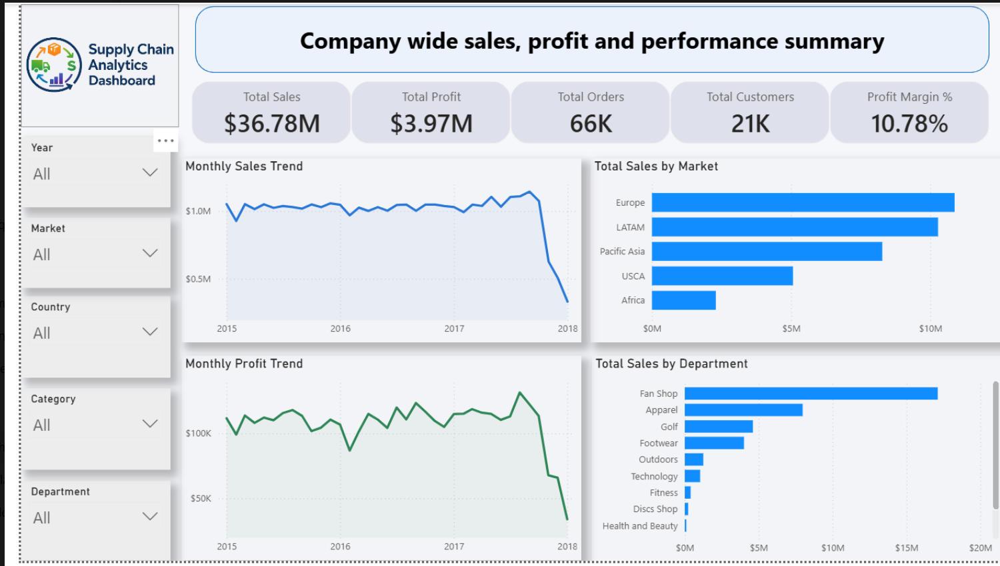
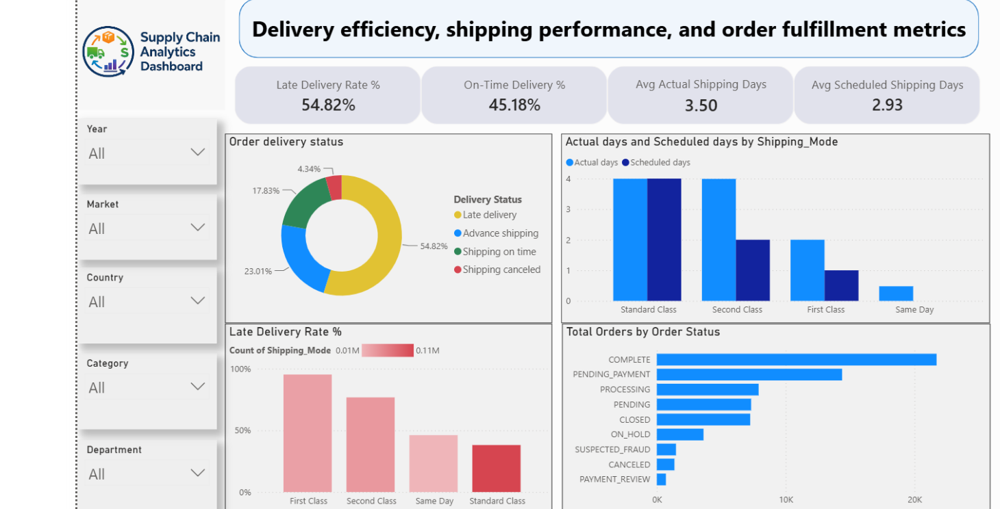
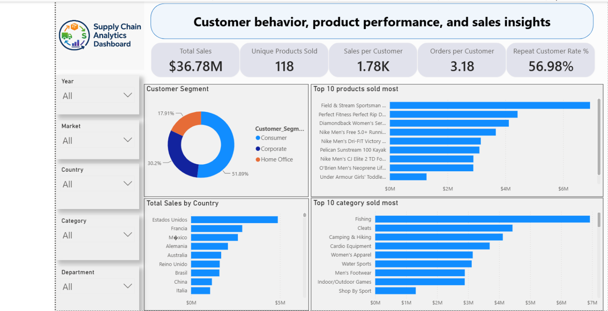

Supply Chain Analytics
An end-to-end order and fulfillment dashboard built on the DataCo Global Supply Chain dataset (180,519 order line items, Jan 2015 – Jan 2018) — sales and profit trends, shipping performance by mode, and where late-delivery risk actually comes from.
The problem
DataCo's raw order data spans multiple markets, shipping modes, and product departments, but on its own it doesn't answer the questions a supply chain or ops team actually asks: which shipping modes are failing to hit their scheduled delivery window, which regions and categories drive the most revenue, and how much of the fulfillment problem is a scheduling issue versus a genuine delay.
Data model
Star schema with a central fact table (vw_FactOrders) at the order-line-item
grain, joined to vw_DimProduct, vw_DimCustomer, vw_DimLocation,
and a standard calendar table (DimDate) built with CALENDAR() and marked
as the model's date table. All trend and YTD/MoM/YoY measures use TOTALYTD,
SAMEPERIODLASTYEAR, and PREVIOUSMONTH against that table rather than
relying on auto date/time.
Key findings
- First Class shipping has the worst late-delivery rate (~93%) despite being the premium tier — the scheduled-day target for that mode looks unrealistic relative to actual fulfillment time, not a delivery-speed problem specifically.
- Standard Class is the only mode that reliably hits its scheduled window — actual and scheduled days are nearly identical, while every faster tier overruns.
- Just over half of orders (54.8%) are flagged at risk of late delivery, concentrated in the faster shipping tiers rather than spread evenly.
- Europe and LATAM are the top two markets by sales — together they generate more than Pacific Asia, USCA, and Africa combined, with Africa contributing less than a quarter of Europe's total alone.
- 56.98% of customers are repeat buyers (more than one order), against an average of 3.18 orders per customer — a healthy retention signal for a sportswear-heavy catalog.
From the Power BI report
Built natively in Power BI Desktop with the DAX measures described above — three report pages, shown below.


